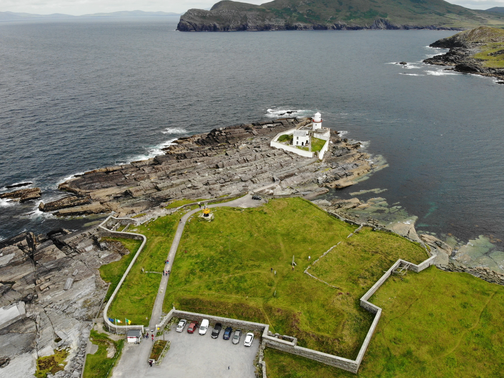

Valentia Lighthouse
Located in one of the most scenic areas on the edge of Europe, facing into the prevailing weather, Valentia Island Lighthouse is home to the most westerly harbour light on the island of Ireland, guiding vessels through the northern entrance to Valentia Harbour.